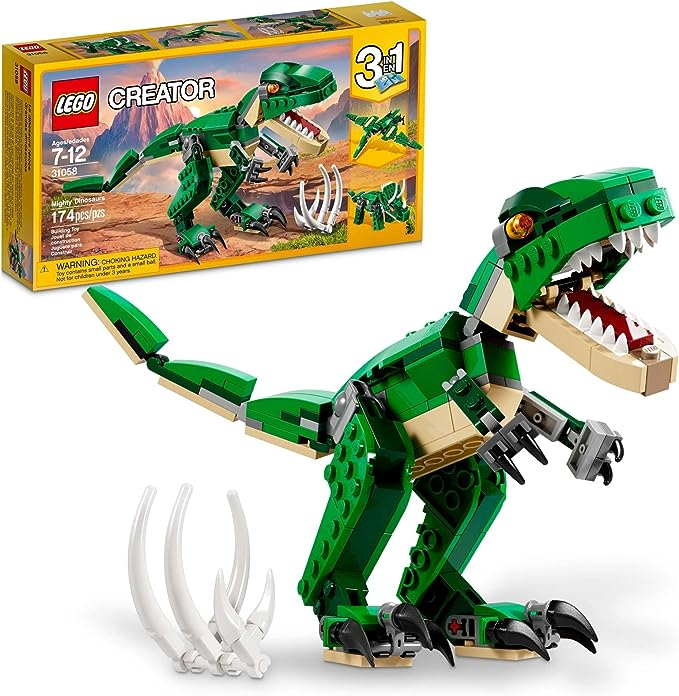

Homero de Jesús Portillo Calva.
Soy una persona extremadamente curiosa.
Me encanta sumergirme en la investigación y explorar todo, desde el átomo que constituye la materia hasta las galaxias que adornan nuestro vasto universo.
Mi curiosidad es como una brújula que me guía a través de la inmensidad del conocimiento y me inspira a aprender cada día más.

Pasatiempos:
- VideoJuegos
- Construir sets de legos

- Practicar programacion en Python

Soy de Actopan
Esta pintoresca ciudad mexicana ofrece una rica historia cultural, hermosos paisajes naturales y una variedad de actividades emocionantes para los visitantes. Puedes explorar sus sitios históricos, como la iglesia de San Nicolás de Tolentino y el Ex-Convento de San Juan Bautista, sumergiéndote en la historia colonial de la región. Además, los alrededores de Actopan cuentan con cascadas, manantiales y áreas naturales, perfectas para el senderismo y el ecoturismo. También puedes disfrutar de la deliciosa gastronomía local y participar en festivales y eventos culturales.
Ir a Google Maps
Por qué estudió Tics?
Estudiar ingeniería en TIC's es una gran elección para mí, por varias razones. En primer lugar, me apasiona la tecnología y estoy emocionado por contribuir al avance de la sociedad a través de la innovación. Además, esta carrera ofrece un amplio abanico de oportunidades laborales y posibilidades de especialización, lo que me permitirá seguir mis intereses. También es una industria en constante evolución, lo que significa que siempre habrá algo nuevo que aprender. Por último, la demanda de profesionales en TIC's es alta, lo que me brinda seguridad laboral.
Intereses:
- Tecnología: En la programación de computadoras, la robótica y la inteligencia artificial.
- Ciencias espaciales: En la astronomía, la astrofísica y la exploración espacial.
- Exploración y comprensión intercultural: En la exploración y comprensión de diversas culturas en todo el mundo.